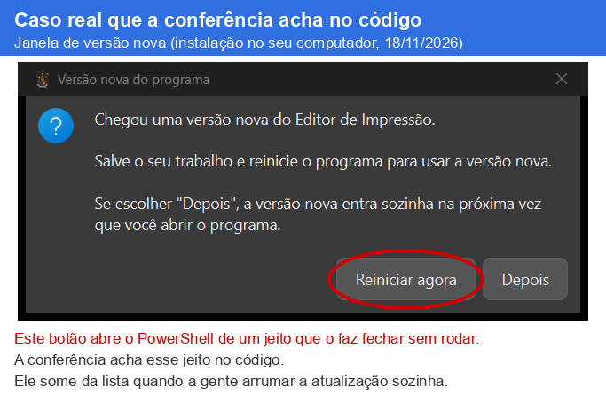

O que é e onde fica: é a conferência automática dos trabalhos dos agentes. Ela roda nos testes do GitHub, em toda entrega; você não vê nada dela no programa.
Um caso real: o botão "Reiniciar agora", da janela de versão nova, abre o PowerShell de um jeito que o faz fechar sem rodar (foi um dos defeitos da instalação no seu computador, em 18/11). A conferência acha esse jeito no código.

O que já está errado hoje: ela leu o programa e achou 176 lugares desses erros. Eles ficam numa lista: a conferência deixa passar esses e barra o trabalho de agente que acrescentar mais um lugar com um desses erros, escrito com as palavras que ela conhece. A lista só diminui: cada conserto tira o seu lugar.
O que ela não faz: não pega o mesmo erro escrito de um jeito que ela não conhece, e não pega defeito que só aparece usando o programa (esses continuam indo para a lista de defeitos).
Quando cada grupo some (107 lugares no plano da parte do Windows):
Ficam para depois da entrega ao Kaique, como você escolheu em 19/11 (69 lugares):
E os pedaços que conversam com o Windows por conta própria, que você deixou para depois logo em seguida:
O que você escolhe: sim, a lista entra assim e a conferência passa a barrar; ou não, e diga o que mudar (enquanto não entra, a conferência não barra nada no código). Sugestão: sim. Nada do programa muda com isso, e nada do que já funciona muda.
De onde veio: do seu "sim" de 19/11 à lista que só diminui. A conta saiu do próprio programa que confere.
Editor de Impressão · gerado em 19/11/2026 às 07:57